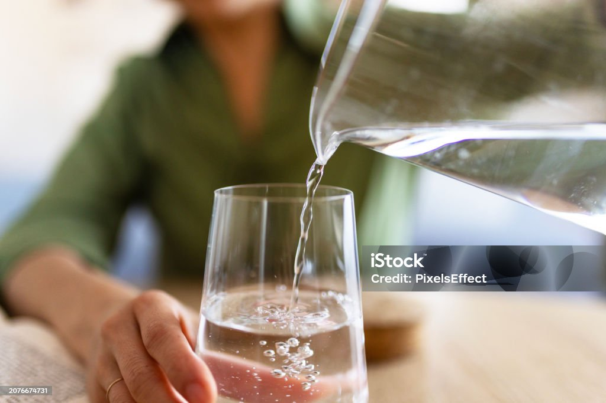

Health Articles

ကျန်းမာရေးနှင့် ညီညွတ်သော အစားအသောက်များ
အာဟာရပြည့်ဝသော အစားအစာများကို မျှတစွာ စားသုံးခြင်းဖြင့် ကိုယ်ခံစွမ်းအားကို မြင့်တက်စေပြီး ရောဂါဘယများကို ကာကွယ်နိုင်ပါသည်။ မှန်ကန်သော စားသောက်မှုပုံစံက အလွန်အရေးကြီးပါသည်။

စိတ်ဖိစီးမှု လျှော့ချခြင်းနှင့် စိတ်ကျန်းမာရေး
နေ့စဉ်ဘဝတွင် ကြုံတွေ့နေရသော စိတ်ဖိစီးမှုများကို လျှော့ချရန်အတွက် တရားထိုင်ခြင်းနှင့် အပန်းဖြေခြင်းတို့က များစွာအထောက်အကူပြုပါသည်။ စိတ်ကျန်းမာရေးသည်လည်း အဓိကကျပါသည်။

ကိုယ်လက်လှုပ်ရှားမှုနှင့် နှလုံးကျန်းမာရေး
တစ်နေ့လျှင် မိနစ် ၃၀ ခန့် လမ်းလျှောက်ခြင်း၊ လေ့ကျင့်ခန်းလုပ်ခြင်းသည် နှလုံးကြွက်သားများကို သန်စွမ်းစေပြီး သွေးလှည့်ပတ်မှုကို ကောင်းမွန်စေကာ ရောဂါများကို ကာကွယ်ပေးနိုင်ပါသည်။

လုံလောက်သော အိပ်စက်ချိန်၏ အရေးပါပုံ
လူတစ်ယောက်အတွက် နေ့စဉ် ၇ နာရီမှ ၈ နာရီအထိ အိပ်စက်ရန် လိုအပ်ပါသည်။ ကောင်းမွန်စွာ အိပ်စက်ခြင်းက မှတ်ဉာဏ်စွမ်းရည်ကို တိုးတက်စေပြီး ခန္ဓာကိုယ်အားအင်ကို ပြန်လည်ပြည့်ဖြိုးစေပါသည်။

ရေလုံလောက်စွာ သောက်သုံးခြင်း၏ အကျိုးကျေးဇူးများ
ရေသည် ခန္ဓာကိုယ်၏ အဓိက အစိတ်အပိုင်းဖြစ်ပြီး အဆိပ်အတောက်များကို ဖယ်ရှားပေးပါသည်။ ရေဓာတ်ခမ်းခြောက်မှု မဖြစ်စေရန် တစ်နေ့လျှင် ရေ ၈ ဖန်ခွက် အနည်းဆုံး သောက်သုံးသင့်ပါသည်။

မျက်စိကျန်းမာရေးအတွက် ဂရုစိုက်သင့်သည့် အချက်များ
ဖုန်းနှင့် ကွန်ပျူတာ အကြည့်များသည့် ယနေ့ခေတ်တွင် မျက်စိကျန်းမာရေးသည် အရေးကြီးလာသည်။ 20-20-20 rule ကို ကျင့်သုံးခြင်းဖြင့် မျက်စိညောင်းညာမှုကို လျှော့ချနိုင်ပါသည်။

ခံတွင်းနှင့် သွားကျန်းမာရေး
သွားတိုက်ခြင်းသာမက သွားကြားထိုးကြိုး (Floss) အသုံးပြုခြင်းသည်လည်း သွားကျန်းမာရေးအတွက် မရှိမဖြစ်လိုအပ်ပါသည်။ ခြောက်လတစ်ကြိမ် သွားဆရာဝန်နှင့် ပုံမှန်ပြသသင့်ပါသည်။

တစ်ကိုယ်ရည် သန့်ရှင်းရေးနှင့် ရောဂါကာကွယ်ခြင်း
လက်ကို ဆပ်ပြာဖြင့် စနစ်တကျ မကြာခဏ ဆေးကြောခြင်းသည် ကူးစက်ရောဂါများကို ကာကွယ်ရန် အထိရောက်ဆုံးနှင့် အလွယ်ကူဆုံး နည်းလမ်းတစ်ခု ဖြစ်ပါသည်။
မှန်ကန်သော ကိုယ်နေဟန်ထားနှင့် ခါးနာခြင်း
အထိုင်များသော အလုပ်လုပ်သူများအနေဖြင့် ခါးနှင့် ကျောရိုး အနေအထားမှန်ကန်ရန် ဂရုပြုသင့်ပါသည်။ အကြောဆန့် လေ့ကျင့်ခန်းများ လုပ်ပေးခြင်းဖြင့် ခါးနာခြင်းမှ ကင်းဝေးစေနိုင်ပါသည်။

ကျန်းမာရေး ပုံမှန်စစ်ဆေးခြင်း (Medical Checkup)
ရောဂါလက္ခဏာ မပြသော်လည်း တစ်နှစ်လျှင် တစ်ကြိမ်ခန့် ကျန်းမာရေး ပုံမှန်စစ်ဆေးမှု ခံယူခြင်းဖြင့် ရောဂါများကို ကြိုတင်သိရှိနိုင်ပြီး ကုသမှုကို အချိန်မီ ပြုလုပ်နိုင်ပါသည်။